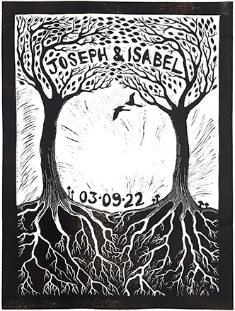

Isabel and Joe's Wedding
Saturday 3rd September 2022
Three Pools, Llanvetherine, Abergavenny NP7 8NL
The Day
The wedding will be at Three Pools – a permaculture farm near Abergavenny. If the weather allows, the
plan is for most of the day to be outside, including ceremony and dinner. The ceremony will begin at 2
o’clock so please arrive in time to take your seat beforehand. We hope that it will be seasonably warm
but it would be wise to bring some layers just in case!
There is plenty of parking on site.
Staying
There is a campsite at Three Pools, which guests are more than welcome to use for free. It’s quite rustic
but there is running water as well as loos and a shower block. Tents and camper vans are both welcome. If
glamping is more your thing then there are also bell tents available to hire from the Three Pools website.
They sleep up to four people and are furnished with single beds (inc. bedding). The price is £160 and is the
same however many people you have. Follow this link to book: https://www.threepools.co.uk/upcoming-events
Breakfast will be provided for the campers on Sunday morning as well as the use of a wood-fired sauna. You
can follow your sauna with a dip in one of the pools!
There are also plenty of rental properties around if you prefer not to stay under canvas. Abergavenny is
just an 11-minute drive away from Three Pools and has hotels/guesthouses and a Premier Inn.
RSVP
Please let us know if you are able to come by the 15th May. When you RSVP, please could you tell us whether
you plan to camp on-site or not. It would also be useful to know if you’re planning to stay in or near
Abergavenny so that we can organise a taxi service.
Please RSVP to josephgidley@gmail.com